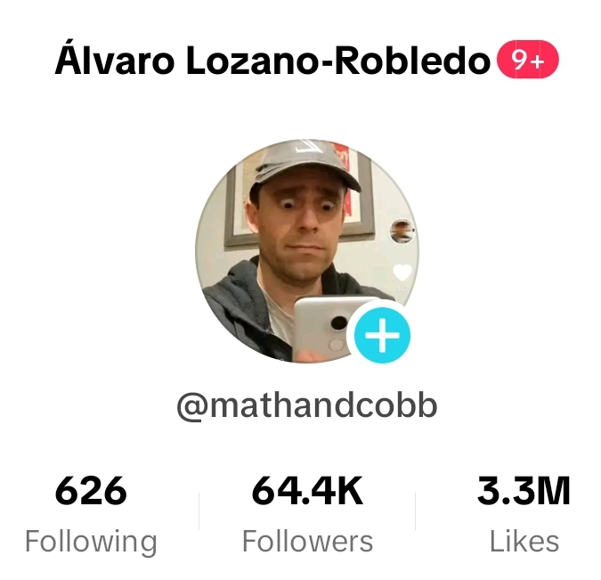

UPDATE: the MaC Fund has been updated! See this post for updated eligibility.
As you probably know, I am on TikTok (@mathandcobb), and I have been regularly posting videos there since January 2021. I am considered a “content creator” and as part of the Content Creator Program, I am rewarded based on the views that my videos get. Not a lot of money! But enough that I have been thinking for a while how to give back to the community (the mathematical community and also the TikTok community of my followers). Thus, I have decided to create a fund to share my earnings with grad students in mathematics! It’s just a drop in the bucket… but every drop helps!
We shall call it the “MaC Fund for Math Grad Student Travel,” or the “MathAndCobb Fund,” or the “MaCTikTok Fund,” or the “MaC Fund” for short.
A list of previous recipients and deadlines can be found in this post.
Here is how it is going to work:
1) Until further notice (e.g., TikTok shuts down in the US), an awardee will be announced every other month, on the first of the month. The first awardee will be announced (on TikTok!) on June 1st. The deadline to be fully considered will be 15 days before the award announcement (so on May 15th in this case).
2) Each awardee will receive about 1/4th of my content creator earnings for the previous two months. For example, the first award will be about $80. My earnings fluctuate though, so awards will vary. You get a line in your CV regardless!
3) Eligibility: grad students in a US-based institution, doing their PhD in Mathematics, and in their third year of grad school or above or, otherwise, already working towards a PhD thesis problem.
4) This is a travel grant, so you need to tell me what conference you are going to that the funds could help with. It is not a lot of money, but I hope every bit helps. There are of course other better funding options to explore!
5) The awardee agrees to be featured in a TikTok video announcing the award. I will need at the very least a picture of the student, and a description of the research they are working on. Even better, I would love a video by the awardee explaining their own research! Even BETTER, a video of a conversation with me about your program and research.
6) Groups traditionally underrepresented in Mathematics are STRONGLY encouraged to apply!
7) Payment will be made via PayPal or Venmo, so the student needs to have an account in one of those platforms.
8) In order to apply, please send an email message to mathandcobb@gmail.com (email subject line: “MaC Fund” + your last name) with the following information:
Your full name
Your PhD Institution and name of advisor if available
Year in your program
What conference are you attending and why?
What are you working on, or learning about, towards your thesis?
Anything else you want to add about you that you want me to consider.
Please share this post widely!
Thank you.